Elenco
Beetlejuice:Michael Keaton

Ator
Michael Keaton, nome artístico de Michael John Douglas, é um ator americano.
Ele recebeu vários prêmios, incluindo um Emmy e dois Golden Globe Awards, além de indicações ao Oscar e ao BAFTA.
Em 2016, foi nomeado Oficial da Ordem das Artes e Letras na França.
Idade: 73 anos
Lydia Deetz:Winona Ryder
Atriz
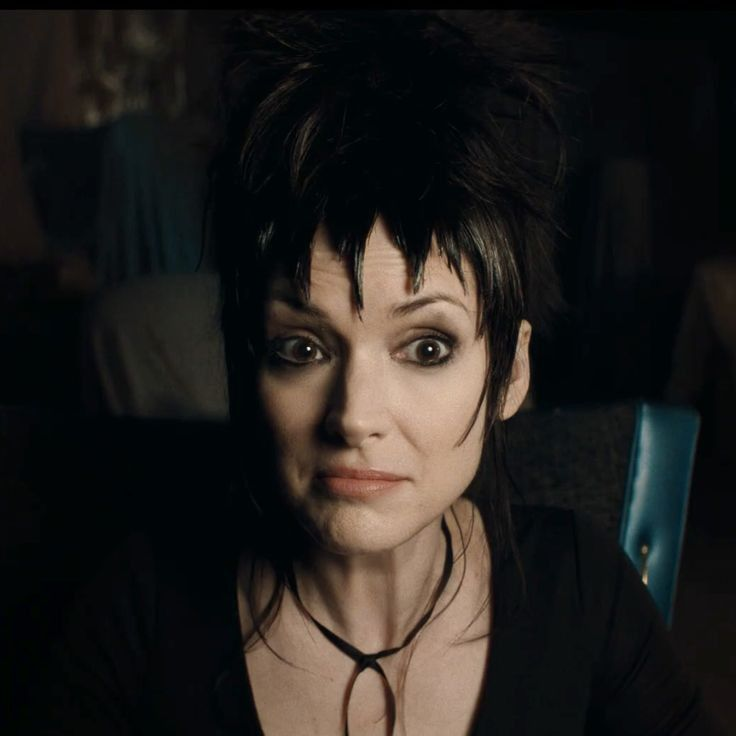

Winona Ryder, é uma atriz norte-americana. Originalmente desempenhando papéis peculiares, ganhou destaque por suas atuações mais diversas em vários gêneros na década de 1990.
Ela recebeu muitos elogios, incluindo um Globo de Ouro e um Screen Actors Guild Award, além de uma indicação ao Grammy, uma indicação ao BAFTA e duas indicações ao Óscar.
Idade: 53 anos
Astrid Deetz:Jenna Marie Ortega
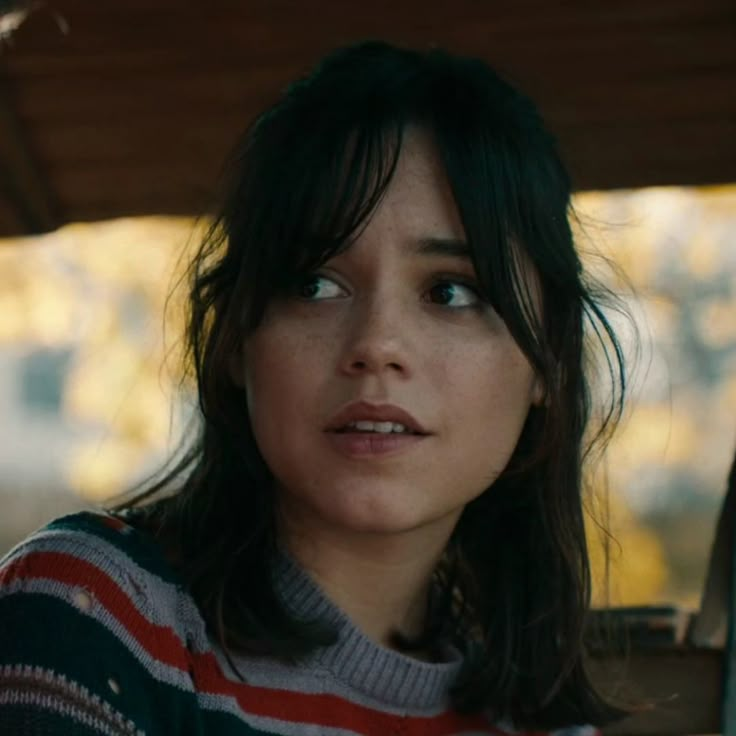
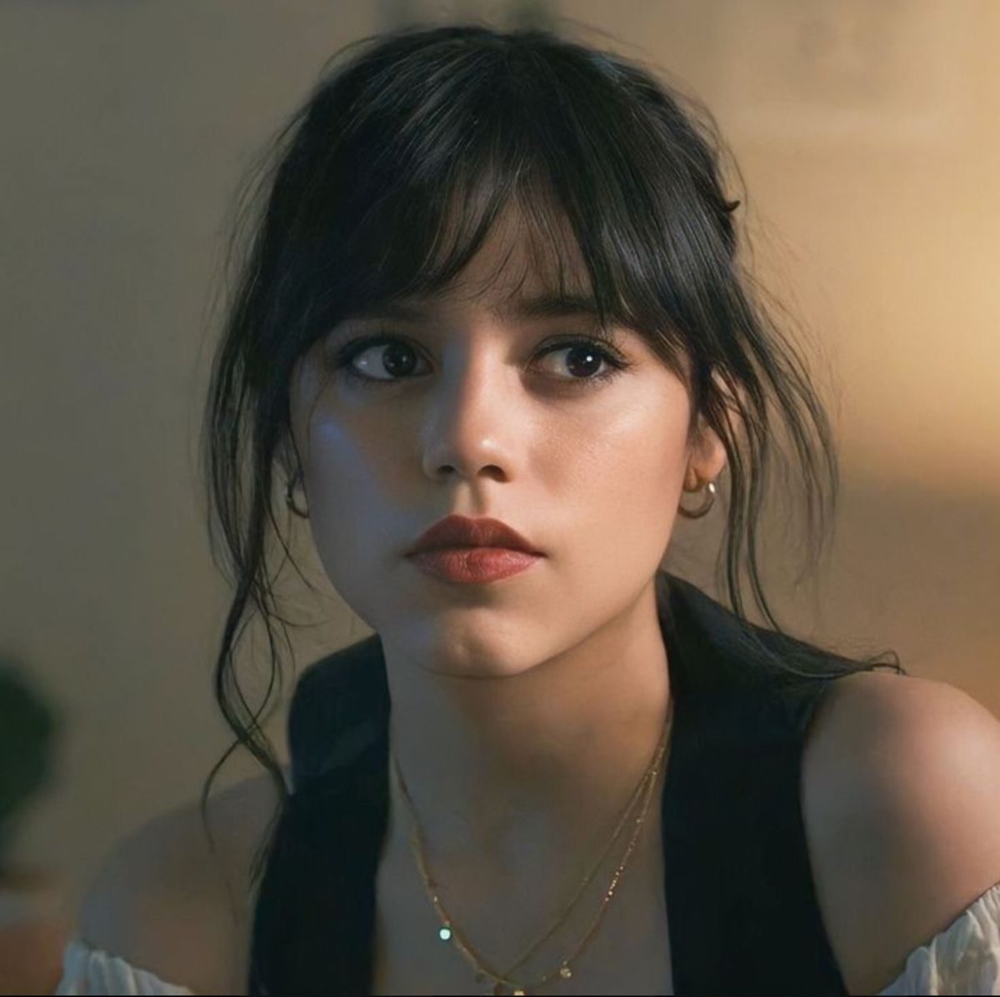
Atriz
Jenna Marie Ortega é uma atriz estadunidense.
Iniciou sua carreira como atriz mirim, recebendo reconhecimento por interpretar a versão infantil de Jane na série de comédia dramática Jane the Virgin.
Idade: 22 anos
Delores LaFerve: Monica Anna Maria Bellucci
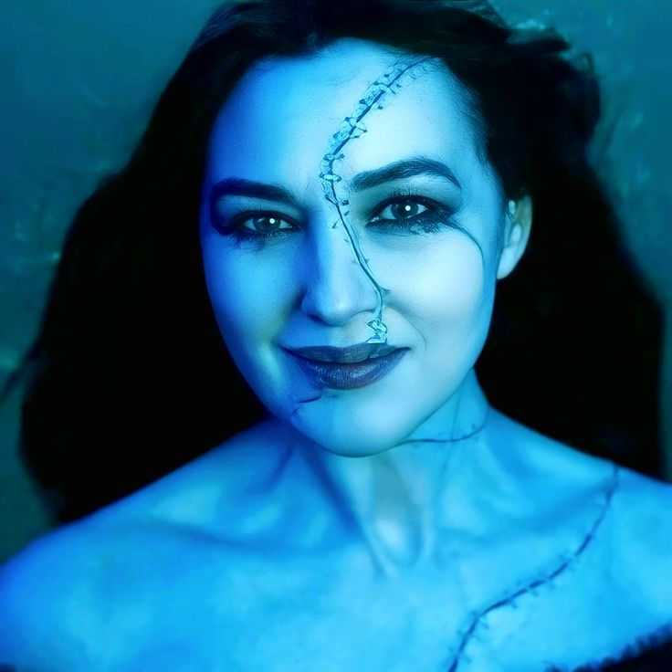
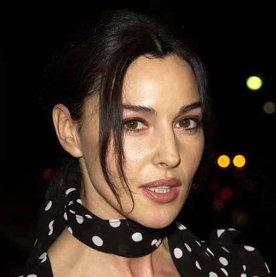
Atriz
Monica Anna Maria Bellucci é uma atriz e modelo italiana, conhecida internacionalmente por seus filmes na Europa e em Hollywood, e também
pela sua carreira iniciada como modelo de grandes desfiles de moda europeus e grifes sofisticadas como Dior e Dolce e Gabbana, nos anos 1980 e 90.
Idade: 60 anos
Rory: Justin Paul Theroux
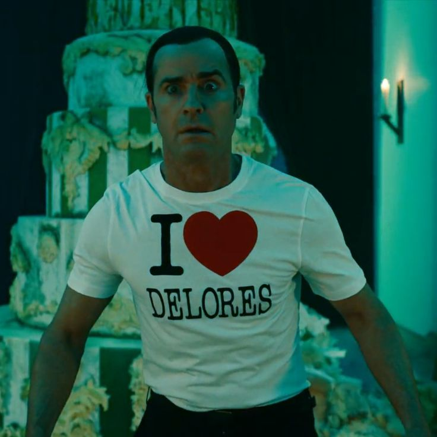
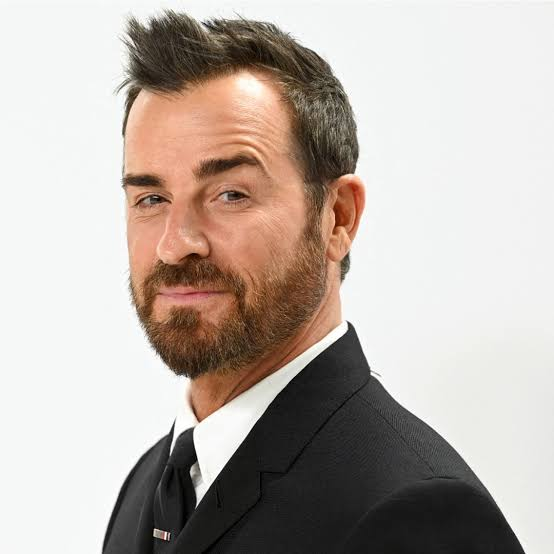
Ator
Justin Paul Theroux é um ator, roteirista e cineasta americano.
Como ator, é conhecido por ter participado em filmes como American Psycho, Mulholland Drive, Inland Empire e The Girl on the Train e por ter protagonizado a série The Leftovers.
Idade: 53 anos
Jeremy Frazier: Arthur Stanley Conti

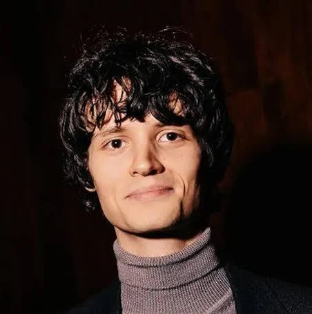
Ator
Arthur Stanley Conti é um ator britânico. Filho de Nina Conti , ele começou sua carreira com um pequeno papel no episódio " We Light the Way "
da série House of the Dragon , em 2022. Conti ganhou reconhecimento por seu papel em Beetlejuice Beetlejuice.
Idade: 21 anos
Wolf Jackson: William James Dafoe
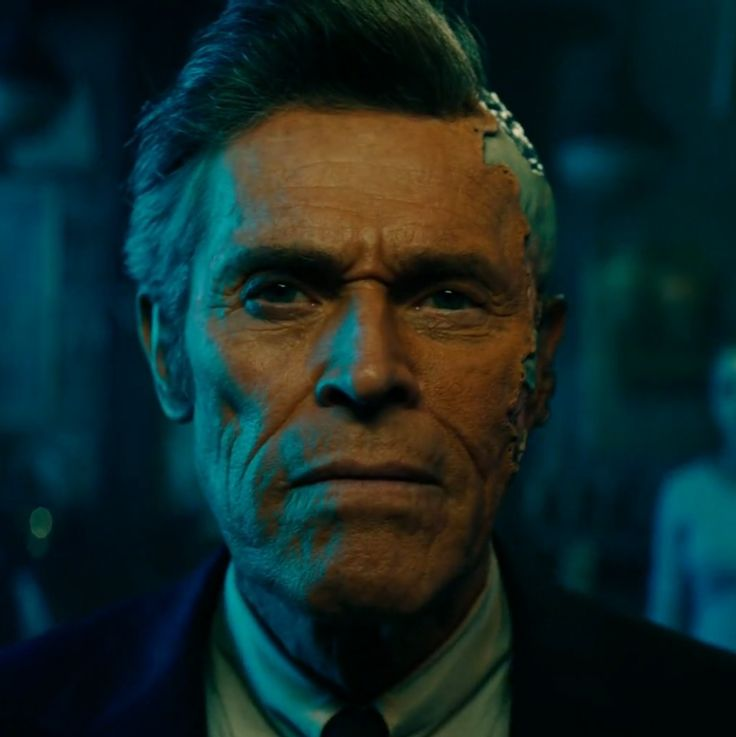
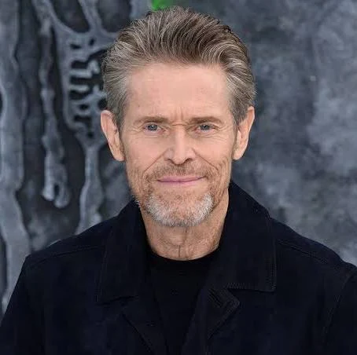
Ator
William James "Willem" Dafoe é um ator americano, com atuações em filmes como Platoon, A Última Tentação de Cristo, Homem-Aranha, Mississipi em Chamas, Viver e Morrer em Los Angeles, John Wick - De Volta ao Jogo, O Farol, Pobres Criaturas, Homem-Aranha: Sem Volta Pra Casa, Coração Selvagem, Psicopata Americano e Nosferatu.
Também atuou na comédia The Life Aquatic with Steve Zissou e deu voz ao personagem Gill no filme de animação Procurando Nemo.
Idade: 69 anos
Delia Deetz: Catherine Anne O'Hara
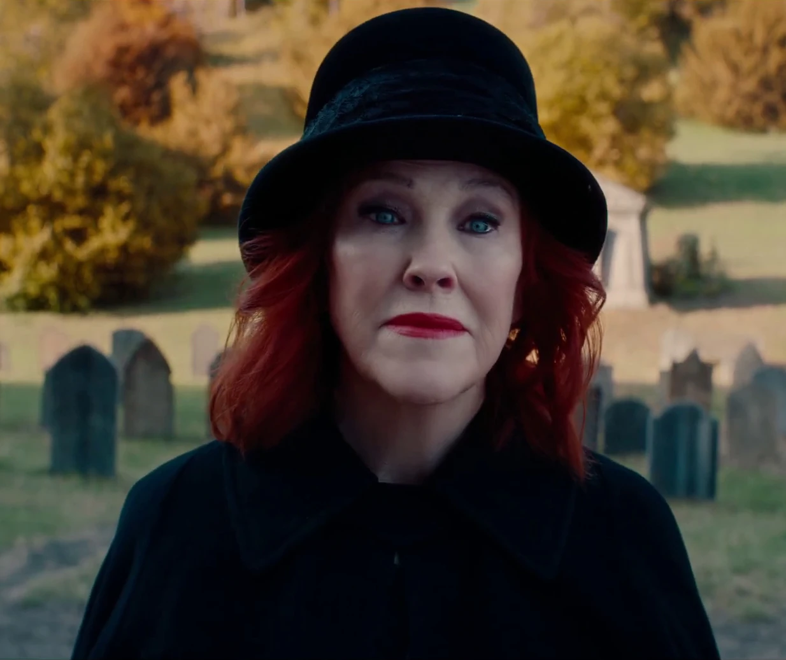
Atriz
Catherine Anne O'Hara é uma atriz, comediante e escritora canadense-americana.
Ela recebeu vários prêmios, incluindo um Genie, um Globo de Ouro, dois Screen Actors Guild, dois Primetime Emmy e seis Canadian Screen.
Idade: 71 anos